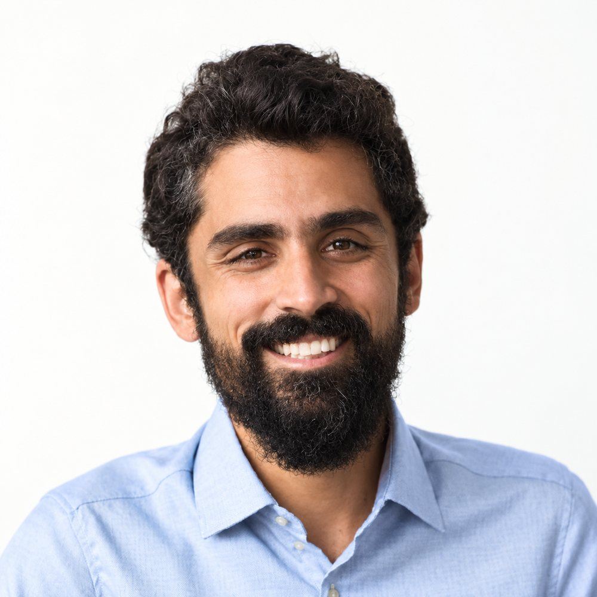

Salut, I am Sebastian Rath.
Software Engineer & Tech Entrepreneur based in Montréal, Canada.
My expertise orbits around AI-driven software development and low-level internals. For the past 20 years I've been building software in C++, Python, Go and others, and that craft shapes how I work with AI today. I focus on operating systems, compilers, build pipelines, parallel computing and DevOps. I've worked on award-winning tools at Maxon and Epic Games, and I founded Snowtrack, which Perforce acquired.
I love photography, languages, and learning how to properly swear in Québécois French.

/work
/photography
Canon EOS Rebel T7i, EF-S 15-85mm f/4-5.6 IS USM
No Generative AI